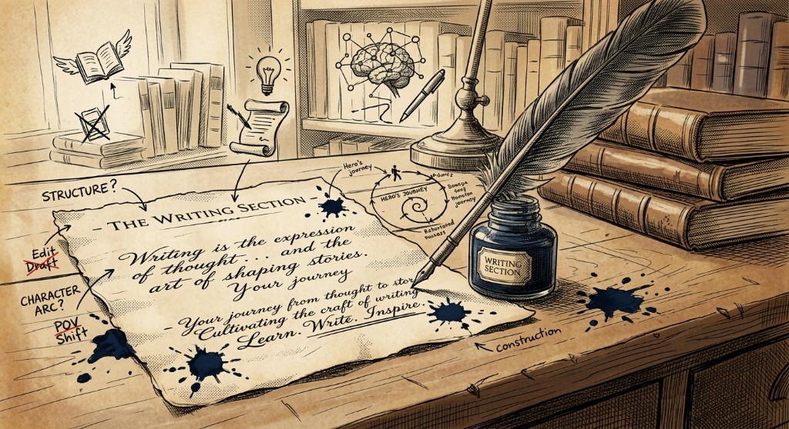

Anthemic · Personal

Essays, notes, and longer pieces.
This corner of the site is still in the inkwell. When it goes live, you will find personal writing here — for now, wander back to the hub or explore the brain map.
Writing is the expression of thought… and the art of shaping stories.